El Hogar de tus Sueños
Tienda online de textil para el hogar (estores enrollables, ropa de cama, fundas de sofá). Funcionaba en PrestaShop; la reescribí entera como aplicación propia en Next.js, migrando catálogo, clientes y pedidos sin perder ventas ni posicionamiento.
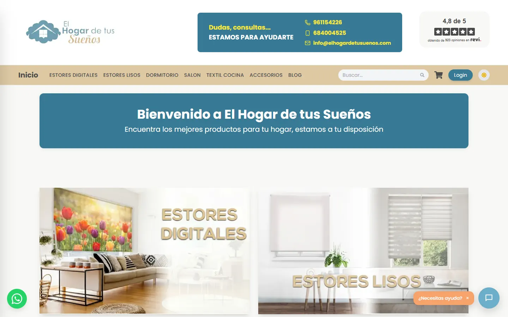
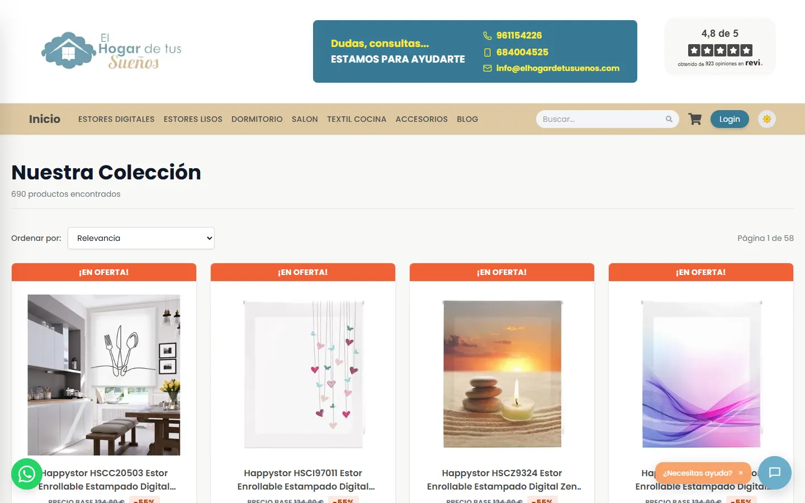
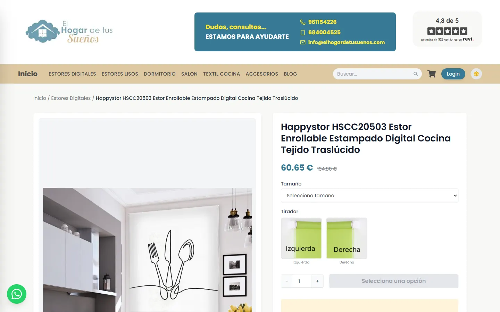
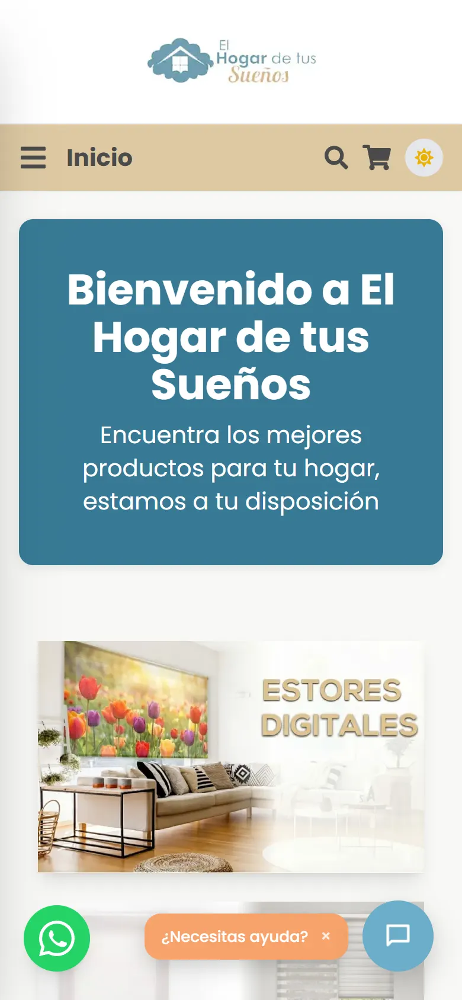
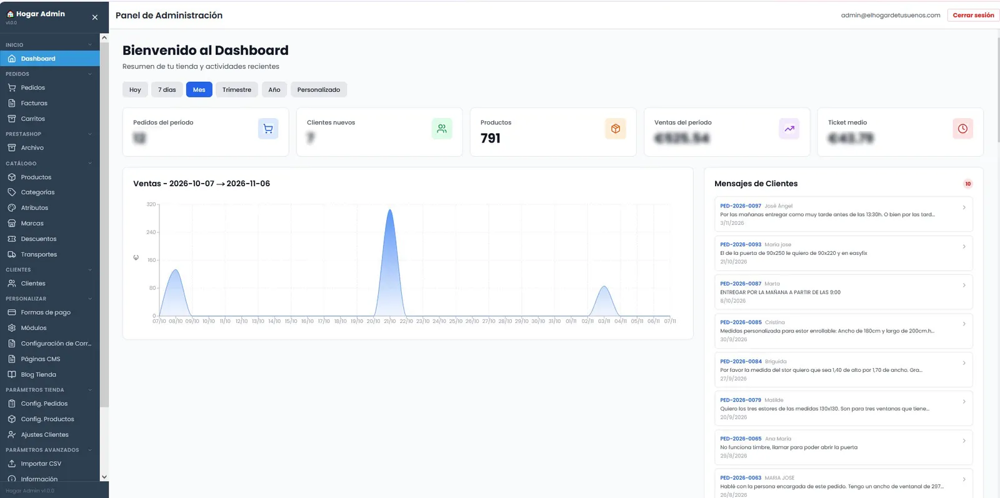
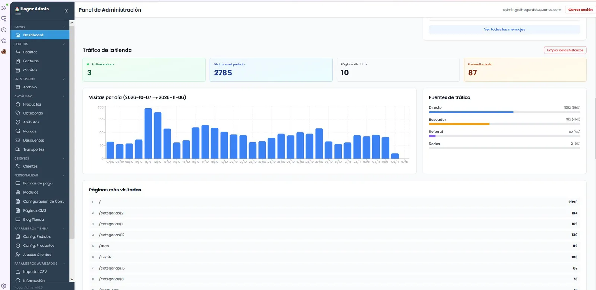
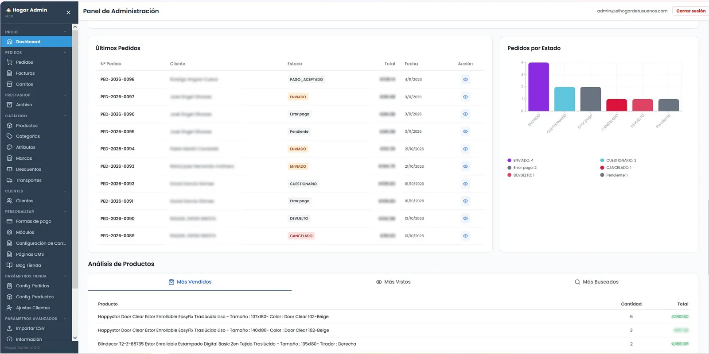
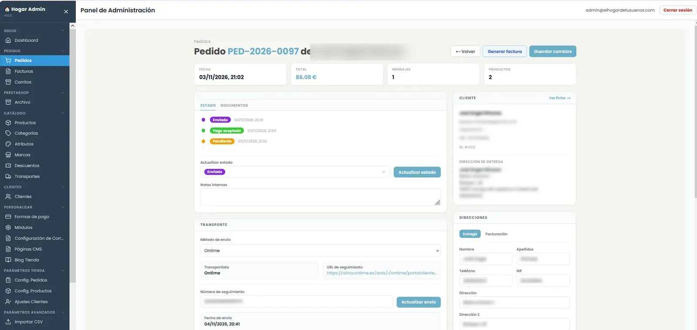
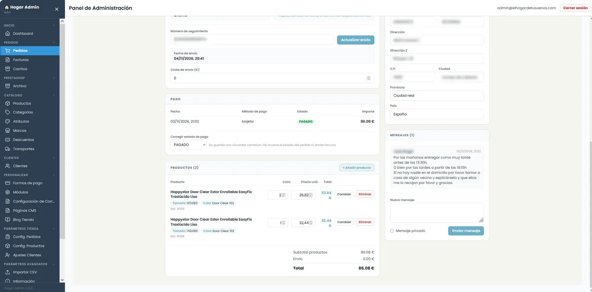
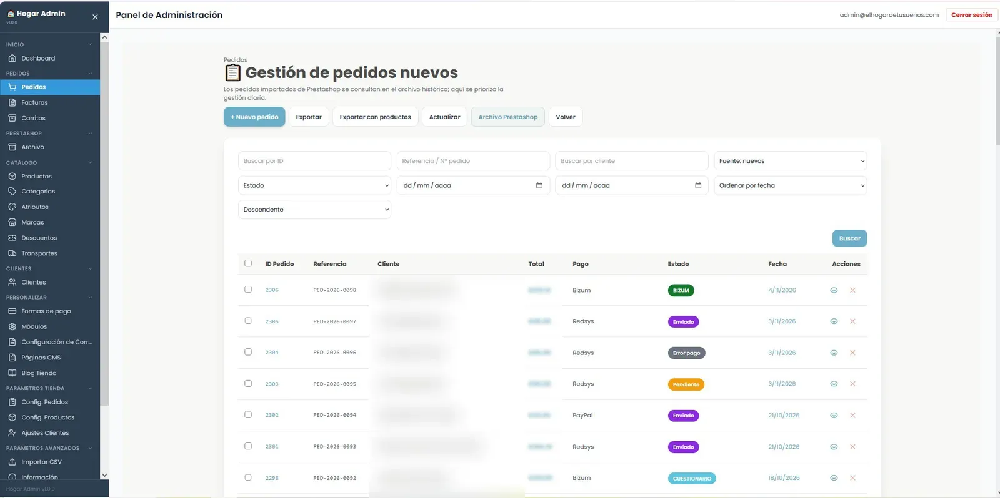
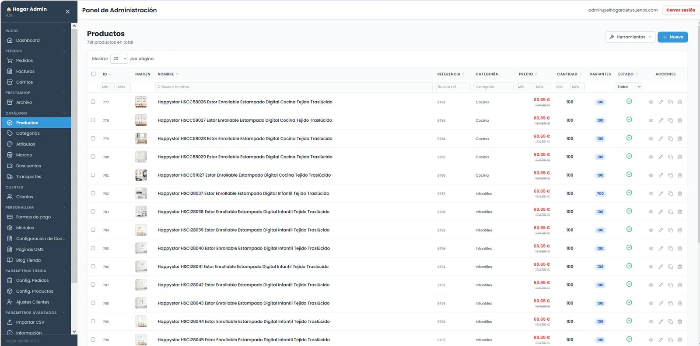
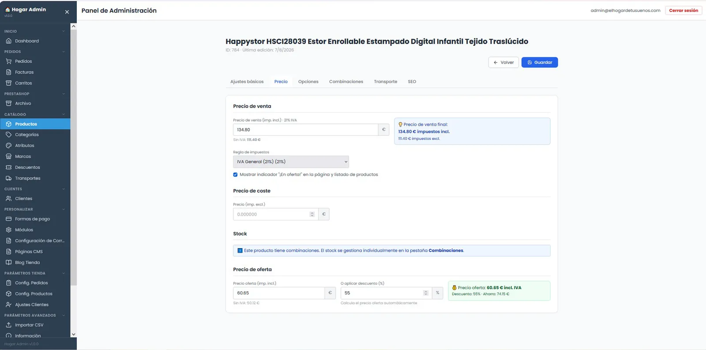
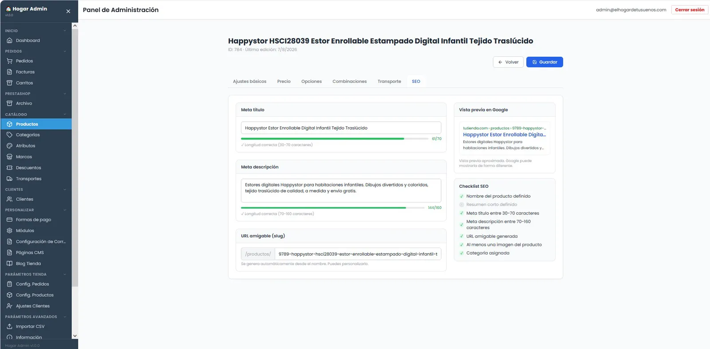
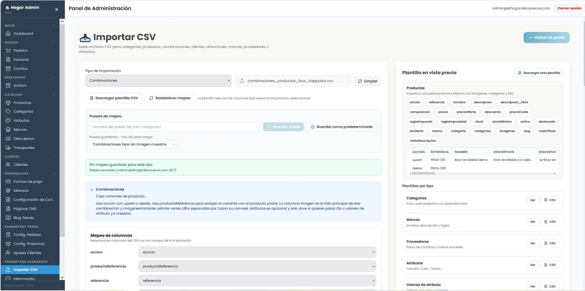
Tienda
- Catálogo por categorías con búsqueda registrada
- Variantes, precios específicos y ofertas
- Medidas personalizadas para producto a medida
- Blog con editor enriquecido y páginas CMS
Compra y pago
- Checkout por pasos, con cuenta o como invitado
- Tarjeta y Bizum por Redsys, PayPal, transferencia y contrareembolso
- Envío por zonas según código postal
- Área de cliente: pedidos, direcciones, cupones y seguimiento
- Acceso con Google y recuperación de contraseña
Panel: ventas
- Pedidos con estados, historial y cambio masivo
- Alta manual de pedidos y carritos abandonados
- Facturas emitidas al cambiar de estado, con regularización
- Cupones y formas de pago configurables
Panel: catálogo y clientes
- Productos, atributos, combinaciones, marcas y categorías
- Importación masiva por CSV
- Ficha de cliente con pedidos y mensajes
- Equipo con roles, incluido un rol de auditor de solo lectura
Panel: personalización
- Plantillas de correos transaccionales editables
- Pop-ups y módulos de la portada
- Transportistas y tarifas
- Exportación de pedidos para la declaración de envases (Ecoembes)
Analítica
- Cuadro de mando: ventas, pedidos por estado, últimos clientes
- Tráfico propio en tiempo real: fuentes, dispositivos, páginas
- IP anonimizada con hash
- Eventos de e-commerce en GA4 y Google Ads con Consent Mode
Decisiones técnicas
Migración sin perder nada. Importador propio desde la base de datos de PrestaShop (productos, combinaciones, clientes y pedidos), redirecciones 301 de las URLs antiguas y recuperación de contraseña para los clientes migrados.
SEO y velocidad. Portada y listados renderizados en servidor, datos estructurados JSON-LD con disponibilidad real, sitemap, títulos únicos, imágenes optimizadas y precarga solo de la imagen principal.
Seguridad y stock. Revisión de los endpoints que quedaban sin autenticación, registro de cada notificación de pago de Redsys y descuento de existencias al confirmar el pedido.
Bitácora (commits reales)
- Pedidos: exportación con detalle de productos para la declaración de Ecoembes
- Envíos: zona por código postal, envío gratis solo en península y cambio de método en el pedido
- conectar el aviso de cookies al Consent Mode de Google
- emitir facturas al cambiar de estado y completar el cambio masivo de pedidos
- medir eventos de ecommerce en GA4 y Google Ads
- recuperar contraseña de clientes migrados de Prestashop
- recuperar 603 imagenes de producto que daban 404
- SSR de la portada y el listado de productos